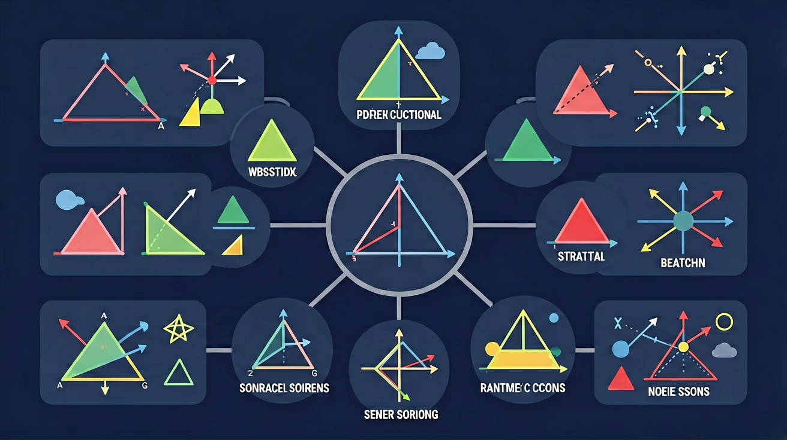

❓ 为什么两个三角形看起来一样却不全等？
❓ 只给三条边怎么判断全等？
❓ 角角边和角边角到底差在哪？
学完这一课，这些问题你都能自信地回答。
🎯 能说出全等三角形的四种判定定理（SSS/SAS/ASA/AAS）
🎯 能根据已知条件选择正确的判定方法
🎯 能分析复杂图形中的全等三角形关系
不用比六个元素——找到"最小证据包"，三步搞定全等证明

[And] 建筑工地上，三角形钢架是最稳固的结构。工人需要制作一模一样的三角形钢架来搭建屋顶。
[But] 三角形有6个元素（3边+3角），难道每次都要量全部6个数据？
[Therefore] 只需要3个关键元素就能判断全等——这就是今天要学的5种判定方法。
掌握SSS、SAS、ASA、AAS、HL五种判定方法，正确书写证明
经历"猜想→验证→反例"探究，理解SSA不成立
逻辑推理能力，"充分条件"与"最小证据"思想
| 已知条件 | 能唯一确定？ | 结论 |
|---|---|---|
| 1个（一条边） | 不能 | ❌ |
| 2个（两条边） | 不能 | ❌ |
| 3个 | 大多数可以 | ✅ |
最小证据包=3个元素，但不是任意3个都行！
SSS、SSA、SAS、ASA、AAS、AAA六种组合中，AAA只相似，SSA有反例。有效的：SSS、SAS、ASA、AAS + 直角△专属HL。
AB=DE，BC=EF，CA=FD → △ABC≌△DEF（SSS）
✅ 三条边确定了两个全等三角形！
三角形确定后形状固定——桥梁、屋顶都用三角形的原因！
AB=DE，∠B=∠E（夹角），BC=EF → SAS
✅ 正确
∠A是AB和AC的夹角
❌ 错误
∠C不是AB和AC的夹角（这是SSA！）
∠A=∠D，AB=DE（夹边），∠B=∠E
∠A=∠D，∠B=∠E，BC=EF（对边）
知两角→第三角可算（内角和180°）。"两角+一边"都行，但考试要区分：夹边→ASA，对边→AAS。
Rt△：斜边AB=DE，直角边BC=EF → HL
直角自带90°→勾股定理→两边可算第三边。HL本质=SSS特殊版！只能用于直角△。
以B为圆心、a为半径画圆→圆与对边可能有两个交点→两个不同三角形。所以SSA不能作为通用判定！
| 方法 | 条件 | 关键 | 范围 |
|---|---|---|---|
| SSS | 三边 | — | 所有△ |
| SAS | 两边+夹角 | 必须夹角 | 所有△ |
| ASA | 两角+夹边 | 夹边 | 所有△ |
| AAS | 两角+对边 | 对边 | 所有△ |
| HL | 斜边+直角边 | 直角△ | 仅Rt△ |
| SSA | ❌ 不成立 | ||
边边边，边角边；角边角，角角边；直角三角HL判；
边边角 是大坑别上当！
| 推理 | 理由 |
|---|---|
| AB=CD | 已知 |
| BC=DA | 已知 |
| AC=CA | 公共边 |
| △ABC≌△CDA | SSS |
💡 关键：公共边AC！
| 推理 | 理由 |
|---|---|
| CM=DM | 已知 |
| ∠CMA=∠DMB=90° | 垂直 |
| AM=BM | 中点 |
| △ACM≌△BDM | SAS |
💡 中点→等边，垂直→等角90°
| 推理 | 理由 |
|---|---|
| AB=CD | 已知 |
| AB∥CD→∠A=∠C | 内错角 |
| AE=CF→AF=CE | 加公共段EF |
| △ABF≌△CDE | SAS |
💡 平行→内错角，公共段→转化——中考高频！
| 推理 | 理由 |
|---|---|
| OA=OB | 已知 |
| ? | 已知 |
| ∠AOC=∠BOD | 已知 |
| △AOC≌△BOD | ? |
| ? | 全等对应边 |
1. AB=DE，AC=DF，BC=EF
2. ∠B=∠E，∠C=∠F，BC=EF
3. Rt△，∠C=∠F=90°，AB=DE，AC=DF
| 推理 | 理由 |
|---|---|
| AC=BC | 已知 |
| ∠ACD=∠BCE | 已知 |
| CD=CE | 已知 |
| △ACD≌△BCE | SAS |
| AD=BE | 对应边 |
先独立作答，再点选项查看对错与错因。
工人测量得到：玻璃A的两直角边分别为3m和4m，玻璃B的斜边为5m且一条直角边为3m。要判断它们是否全等，最快捷的方法是
下列哪组条件不能保证两个三角形全等？
用尺规作图画一个与已知△ABC全等的三角形，最可靠的步骤是
若△ABC≌△DEF，AB=5cm，∠B=40°，则对应边DE=____cm，对应角∠E=____°
答案：5,40
全等三角形对应边和对应角相等
用HL定理判定直角三角形全等时，必须满足一组____相等和一组____相等
答案：斜边,直角边
HL定理要求斜边和直角边分别对应相等
关于全等三角形的判定，下列说法正确的是
使用几何软件绘制三角形，探究最少需要哪些条件能唯一确定全等三角形
将判定条件拆解为边、角两种元素的组合
SSS代表三边对应相等即全等
AAS与ASA本质都是两角一边，但边的位置不同
用动态几何软件演示边角变化对全等的影响
用全等判定解决实际测量问题（如河宽）
✅ 展示反例：两边及非夹角相等不全等
💡 忽略夹角位置要求
✅ 展示相似但大小不同的三角形
💡 混淆全等与相似
口诀：边边边，角角边，两边一角夹中间
类比：像配钥匙：必须所有齿槽完全匹配才能开锁
And：学生已学过三角形的基本性质
But：如何仅凭三条边判断两个三角形全等？
Therefore：掌握最基础的全等判定定理
边边边（SSS）判定：若两个三角形的三条边分别相等，则它们全等。例如，△ABC中AB=5cm、BC=7cm、AC=8cm，△DEF中DE=5cm、EF=7cm、DF=8cm，则两三角形全等。注意对应边顺序必须一致。
🌍 脚手架搭建时，工人通过测量钢管长度确保三角支架全等，保证结构稳定性。
以下哪组数据能构成全等三角形？
And：已掌握SSS判定
But：当无法测量所有边时怎么办？
Therefore：学习更灵活的SAS判定方法
边角边（SAS）判定：两边及其夹角对应相等则全等。例如：△ABC中AB=6cm，∠B=50°，BC=4cm；△DEF中DE=6cm，∠E=50°，EF=4cm，则全等。关键点：夹角必须位于已知两边之间。
🌍 折叠椅的支撑腿与座面形成固定夹角，厂家通过SAS原理确保对称腿完全一致。
根据SAS判定，需要补充哪个条件？已知AB=DE，∠B=∠E，____
And：已会使用边条件判定
But：若只能测量角度和一条边怎么办？
Therefore：掌握ASA判定突破测量限制
角边角（ASA）判定：两角及其夹边对应相等则全等。例如：△ABC中∠A=30°，AB=5cm，∠B=70°；△DEF中∠D=30°，DE=5cm，∠E=70°，则全等。特别注意：已知边必须是两角的公共边。
🌍 测量河宽时，在岸边固定基线，通过ASA原理用测角仪推算对岸距离。
哪个条件能使△ABC≌△DEF？已知∠A=∠D，AB=DE，____
And：已掌握三种基本判定
But：如何灵活选用不同判定方法？
Therefore：培养综合运用能力解决复杂问题
实际解题需综合分析：①先找明显相等的边/角 ②优先选用SSS/SAS（需较少条件）③当有平行线时注意内错角相等。例如：已知AB∥CD，AB=CD，AC=BD，可先证∠BAC=∠CDB（内错角），再用SAS判定△ABC≌△DCB。
🌍 房屋装修中，通过组合使用多种判定方法确保瓷砖切割后的三角形装饰板对称。
已知AD=BC，∠ADB=∠CBD，能直接使用____判定△ABD≌△CDB